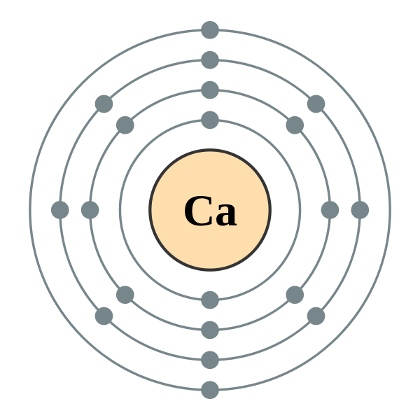

Bacteria cultures are added to milk in order to turn lactose into lactic acid. The process is depicted below. As this process occurs, an acidic environment is created.
Casein (shown above) is a soluble protein found in milk.
When digested, caesin releases casomorphins, which stimulate the morphine and k-opioid receptors in our brain. These receptors regulate sensations of pleasure, so an abundance of these casomorphins is what allows us to enjoy the melted cheese on a pizza!
After the bacteria is added, the enzyme rennet is added to the milk as a catalyst to "curdle" the casein. This process creates a custard-like mass, and is sped up by the acidity of lactic acid. The milk divides into two components: curd (the solid) and whey (liquid)
The mixture is cut to release the whey, and is then heated and stirred. The higher the temperature, the more firm the cheese becomes.
It is then drained to remove the whey, leaving behind just the curd.
The cheese is then salted to slow down the bacteria processes, and pressed to form the correct shape.
There are many kinds of cheese, and each one is made in a slightly different way. The cheese most frequently found on pizzas is mozzarella cheese.
The reason mozzarella cheese goes so well on pizzas is the way it is made.
It is a softer cheese, which means it isn't heated up as much. Additionally, it is often eaten almost immediately after being made.
The reason mozzarella cheese goes so well on pizzas is the way it is made. Calcium (pictured below) is added to cheese in order to make mozzarella cheese.
At about 90°F, the solid milk fat in cheese begins to liquefy and beads of melted fat rise to the surface
At about 130°F, the bonds holding together the casein proteins break, causing the cheese to collapse.
This reaction is what causes cheese to brown. High heat causes amino acids and simple sugars to rearrange in a way that reflects brown light, while forming new aroma and flavor molecules.
Mozzarella is the perfect melting cheese for several reasons.
Mozzarella has a high moisture content, which means that the casein proteins are loosely packed with lots of water interspersed between them. This allows mozzarella to easily liquefy and spread out across the pizza.
Casein molecules separate over time. Mozzarella is eaten fresh, which means that the casein molecules are large and stretchy, causing the cheese to be stringy and delicious when eaten on a pizza!